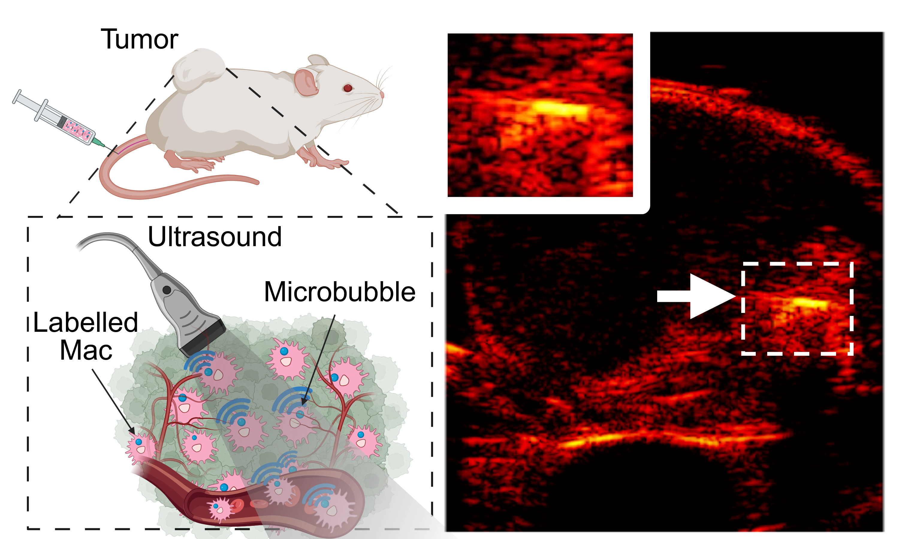

Liquid biopsy is a technique that uses biomarkers in the blood to diagnose, monitor disease progression, and treatment response. The application of liquid biopsy for brain tumors is extremely challenging as biomarkers are often blocked by the blood-brain barrier (BBB), a gate keeper that prevents molecules in the bloodstream from entering the brain. Thus, the biological assessment of brain tumors relies on invasive surgical procedures for tissue biopsy, which introduce risks and limitations. Our goal is to combine microbubble-enhanced focused ultrasound with liquid biopsy techniques to overcome the challenges presented by the BBB and develop a protocol to assess the response to treatment of brain tumors.
